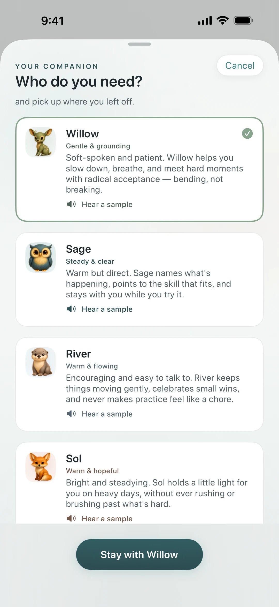
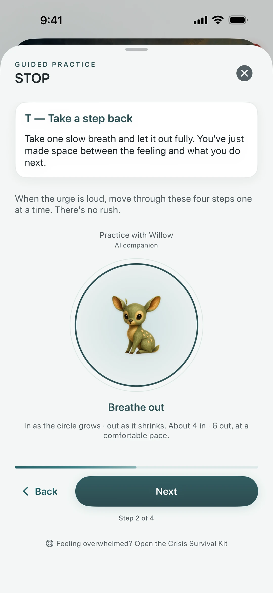
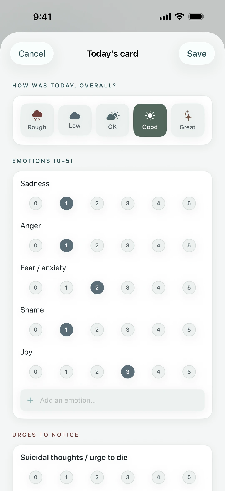
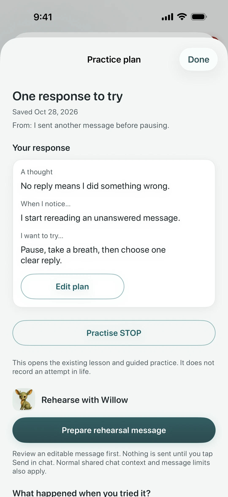
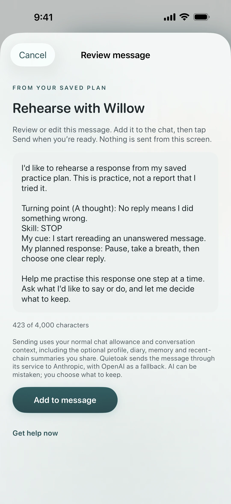
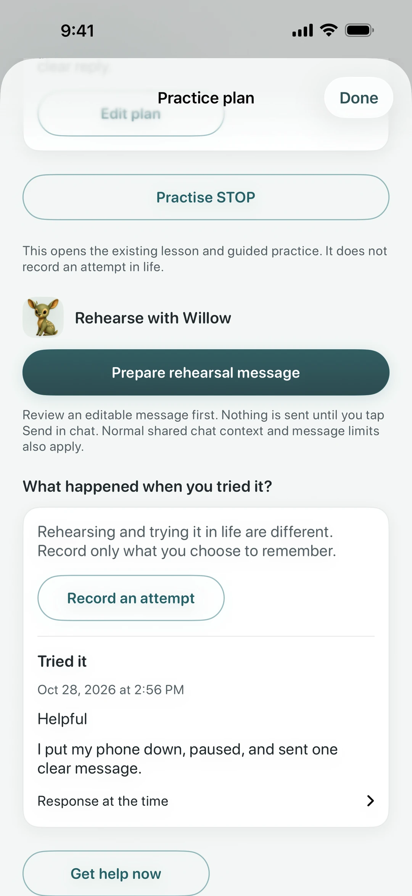

Talk it through.
Find a next step.
A little space for whatever today brings. Talk with an AI companion, practice a DBT skill, and find one small response to try.
Coming to iPhone · Free skills, diary & crisis kit
For adults 18+ · Self-help, not therapy

You do not have to figure it
all out at once.
A conversation when you want one. Practical tools when you need them. Room to come back and try again.
Make a little room
Talk with a companion about what is on your mind, or start with a guided skill on your own.
Find one next step
Trace a hard moment, choose a turning point, and make a response you would like to try.
Come back to yourself
Record what you tried. Keep a daily diary of emotions, urges and skills, with space for your own words.
Your diary, skills, written chains and practice plans work with AI sharing off. No account required.
A calm place.
Something you can actually do.
Real screens from Quietoak. Explore the small steps from a conversation to a response you can try.

Talk it through
A conversation with Willow and a STOP skill card.


Find your companion
Six different companions. Choose the one who feels right today.


Take it one step at a time
Follow a guided STOP practice, one gentle cue at a time.


Give the day a little space
Record your mood, emotions, urges and the skills you tried.


Choose a response to try
Turn a written chain into a cue, a skill and a practical next step.


Practice what to say
Review an editable rehearsal draft before choosing to send it.


Notice what you tried
Record a real-life attempt yourself, with room for a note.
Scroll to explore · Select any screen for a closer look
Choose the one who fits you.
Six nature-inspired AI companions, each with their own way of meeting you. Grounding, curious, steady or gentle. There is no right one to choose.
Choose a companion to see them move. Tap Hear to meet their voice.
Warm and quiet. Starts with your feet on the floor and one slow breath, before anything else.
Hear WillowRead Willow’s introduction
Hi, I'm Willow. Whatever you're carrying right now, we can set it down together for a moment and just breathe.
Calm and plainspoken. Names what's going on, so it stops feeling like a mystery.
Hear SageRead Sage’s introduction
I'm Sage. When things feel like too much, we'll find one small, doable next step — and take it together.
Curious and easy to talk to. Asks before it assumes, and keeps things conversational.
Hear RiverRead River’s introduction
Hey, I'm River. There's no wrong way to start — just tell me how today's going, and we'll take it from there.
Encouraging, never peppy. Helps you find one small, real thing to hold on to, without talking you out of the hard part.
Hear SolRead Sol’s introduction
I'm Sol. Even on the heaviest days, we can find one warm thing to stand on. I'm glad you're here.
Unhurried and solid. Sits with you without rushing to fix anything, and says the least of the six.
Hear StoneRead Stone’s introduction
I'm Stone. We've got time. Nothing here has to be fixed right now — let's just take one breath, and then the next.
Soft-spoken and kind. Takes the pressure off first. Everything else can wait.
Hear FernRead Fern’s introduction
I'm Fern. You don't have to be okay right now, or fix anything. Let's just be gentle with whatever this is.
Real samples from the app, in each companion's own voice. AI companions, not human. In chat, these voices come with Plus. Guided audio uses them for everyone, free.
Switch whenever you like. Each companion keeps a separate conversation history.
Let a familiar voice
walk you through it.
Put the phone down and follow along. Your companion guides you through STOP, TIPP, paced breathing, and a body scan, one cue at a time.
- Six voices. Your choice.
Every exercise is recorded in each companion’s own voice.
- A little practice, freely available.
Guided audio is included for everyone, with or without Plus.
- Ready when you need it.
Recordings are stored in the app, so you can listen without a signal.
A 17-second pause
The body scan
“Settle into wherever you are.”
Read by Willow · AI companion, not human
Read the audio excerpt
Settle into wherever you are. You don’t need to sit any special way.
If any part of your body feels like too much to visit today, just skip past it. You’re in charge of where your attention goes.
Open the audio file
DBT skills, made gentle.
Practice eighteen skills across the four DBT modules, one small step at a time.
Six companions
Grounding, clear, flowing, hopeful, steady, or tender. Pick the one that suits you and give it a name. Your AI guide for daily practice and the hard days.
Real DBT skills
Wise Mind, Radical Acceptance, DEAR MAN, and the rest, each explained in plain, everyday words.
A one-minute diary card
A real DBT diary card. Rate your mood, emotions, and urges, log the skills you reached for, and type or dictate a note.
Guided exercises
STOP, TIPP, paced breathing, and a body scan. Follow each step on screen, or let your companion talk you through it out loud.
Crisis kit, always free
Regional resources and grounding tools, without a subscription. The directory works offline; placing calls, sending texts and opening websites require service.
Your diary, your space
Your diary and practice are stored on your device. You choose what to share with your companion, and you can clear saved conversations anytime.
AI is a choice.
Your practice is still yours.
Use the local diary, skills and written plans with AI sharing off. When you enable AI, messages and disclosed context are sent to our backend and an AI provider to generate replies.
Read how your information is usedCrisis resources stay free.
Open Get help now from any main tab or during onboarding. The kit includes 988 (call or text, US), 741741 (text HOME), and regional resources. Bundled resources and grounding work offline; calls, texts and websites require service. Chat may offer resources when it detects danger, but detection can miss things. Quietoak is not an emergency service; if you are in immediate danger, call your local emergency number.
A generous free plan. Plus when you want more.
The skills, the diary card, all six companions, and the crisis kit are free. Plus adds more messages, a premium voice, and a PDF to share with your therapist.
Free
- Eighteen DBT skills across all four modules
- The one-minute diary card & gentle trends
- All six companions
- Saved conversations and companion memory
- 5 companion messages a day
- Crisis resources and grounding tools, available offline
Quietoak Plus
US pricing. Local prices are shown in the app before purchase.
- Everything in Free
- 100 companion messages a day
- 30 chain-analysis reflections a day, up from 3
- A warmer, more natural premium voice for your companion
- A clinician PDF of diary cards, chains, plans and recorded attempts
A message with a photo uses three daily messages on either plan. The app shows when your allowance resets.
The Crisis Survival Kit stays free, without a message allowance. Calls, texts and websites need service.
In the iPhone app, Plus is an auto-renewing subscription. If you subscribe, it's billed to your Apple ID and renews unless cancelled at least 24 hours before the period ends; manage or cancel anytime in iOS Settings. See terms.
FAQ
Is Quietoak therapy?
No. Quietoak is a self-help app for practicing skills based on the DBT (Dialectical Behavior Therapy) model. It isn't therapy, a diagnosis, or a substitute for professional care. Use it alongside therapy, or to learn the skills on your own.
Is the companion a real person?
No. Your companion is an AI guide, and it says so. It never claims to be a therapist or a person, and it points you to people and professional help when you need them. It's there to help you practice skills, not to replace real support.
Can I talk out loud, or switch companions?
Both. Tap to start speaking and tap again to send. Your companion answers in a warm spoken voice, or you can stay in text. You can switch between the six companions for free, whenever you like, and each one keeps its own conversations and memories. A premium, more natural voice is part of Quietoak Plus.
What if I'm in crisis?
Get help now is available on every main tab and throughout onboarding, with help controls in voice mode and guided practice. The Crisis Survival Kit is free. Bundled resources and grounding work offline; calls, texts and websites require service. If you're in immediate danger, call your local emergency number. Quietoak is not an emergency service.
Is my data private?
Your diary and practice are stored on your device, and we keep no copy of your diary on our servers. There's no account and no login, and we don't run ads or third-party trackers on your diary or chat. To generate replies, your messages are sent to our backend and an AI provider, together with a short recap of your last 7 logged diary days (including your urge ratings and the first 120 characters of each day's note) so the reply fits your week. Saved conversations are linked to a random installation ID so they're there when you come back. Optional profile details you share, such as your name, can also be sent with your messages or included in saved memories. You can delete them anytime, and the full data flow is in our privacy policy.
What's free, and what's Plus?
Free includes the DBT skills library, diary and trends, written chains and practice plans, all six companions, saved conversations, the crisis kit, and 5 companion messages a day. A message with a photo uses three daily messages. Quietoak Plus ($9.99/month or $59.99/year in the US) includes 100 messages and 30 chain reflections a day instead of 3, premium spoken replies, and clinician PDF export. Local prices and subscription terms appear in the app. The on-device voice and the Crisis Survival Kit remain free; the kit has no message allowance.
Who is Quietoak for?
Adults (18+) who want a calm, private place to practice DBT skills: alongside therapy, while on a waitlist, or on their own.
iPad? Mac? Android?
iPhone first. The iPhone app runs on iPad in iPhone-compatibility mode for now; a native iPad layout, Android, and Mac aren't available yet.
A quieter moment starts
with one small step.
Quietoak is coming to iPhone. Ask us to let you know when it is ready.
Email me at launchQuietoak teaches DBT skills and is not therapy, medical treatment, a diagnosis, or a crisis service. Your companion is an AI guide, not a person or a substitute for professional care. If you're in crisis, call or text 988 (US) or your local emergency number. 18+.